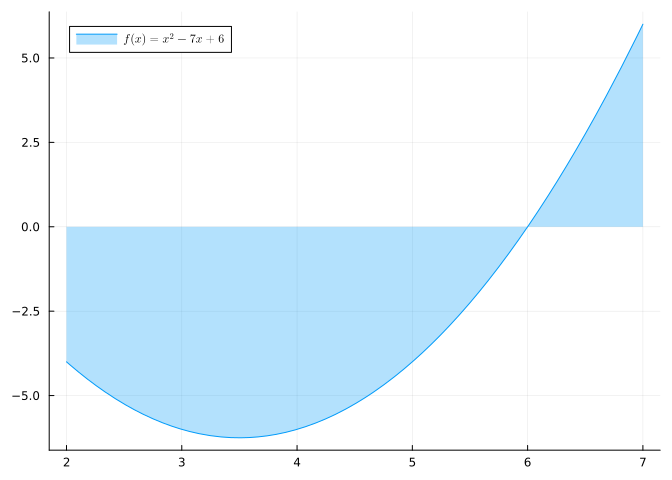
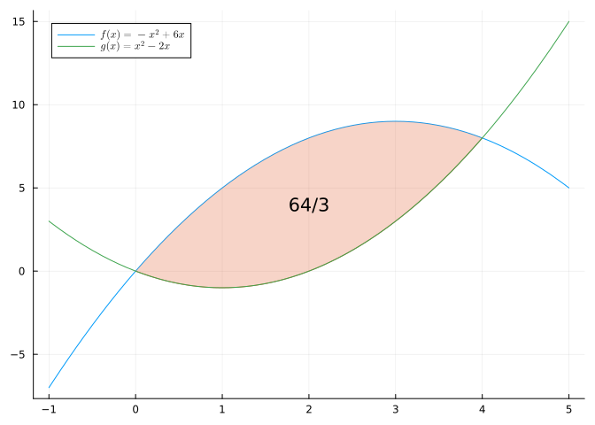
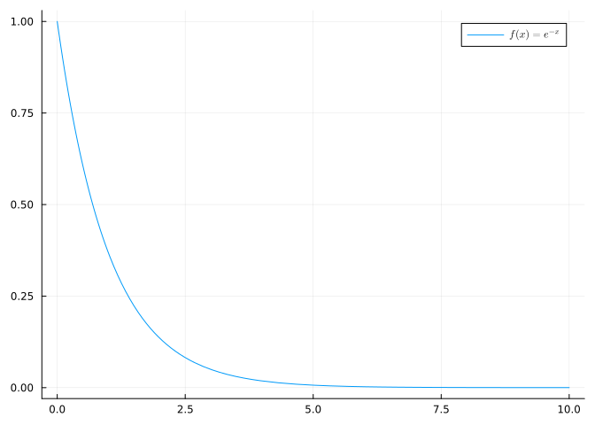
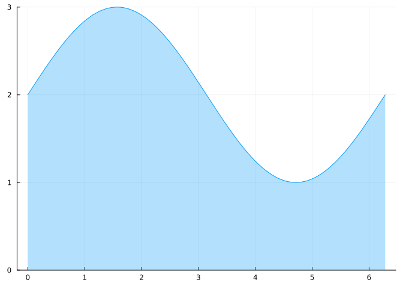
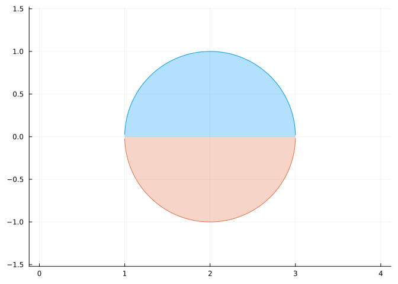
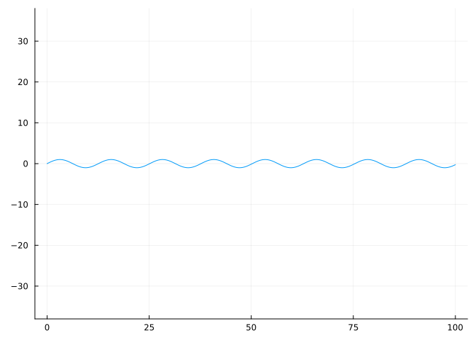
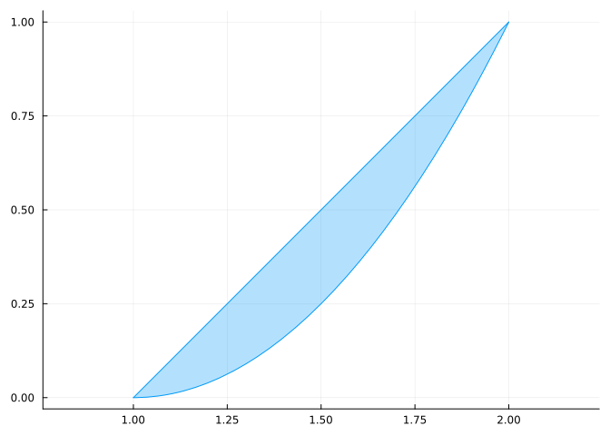
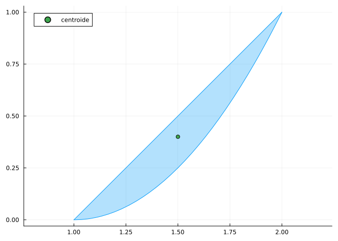

using SymPy # Para el cálculo simbólico de integrales.
using QuadGK # Para el cálculo numérico de integrales.
using Plots # Para el dibujo de gráficas.
#plotlyjs() # Para obtener gráficos interactivos.
using LaTeXStrings # Para usar código LaTeX en los gráficos.
using PrettyTables # Para formatear tablas.7 Integrales de funciones
7.1 Ejercicios Resueltos
Para la realización de esta práctica se requieren los siguientes paquetes:
Ejercicio 7.1 Sea \(f(x)=x^2\).
Calcular la suma inferior de Riemann de \(f\) en el intervalo \([0,1]\), tomando una partición de 10 subinvervalos de igual amplitud.
Soluciónf(x) = x^2 Δx = 1/10 areas_inf = [f((i-1)*Δx)*Δx for i = 1:10] sum_inf = sum(areas_inf)0.2850000000000001Calcular la suma superior de Riemann de \(f\) en el intervalo \([0,1]\), tomando una partición de 10 subinvervalos de igual amplitud.
Soluciónf(x) = x^2 Δx = 1/10 areas_sup = [f(i*Δx)*Δx for i = 1:10] sum_sup = sum(areas_sup)0.3850000000000001Dar una cota del error cometido en la aproximación del área encerrada entre la gráfica de \(f\) y el eje \(x\) en el intervalo \([0,1]\) tomando sumas de Riemann para una partición en 10 subintervalos.
Soluciónerror = sum_sup - sum_inf0.10000000000000003Definir una función para calcular de manera aproximada el área encerrada entre la gráfica de \(f\) y el eje \(x\) en el intervalo \([a,b]\) tomando sumas de Riemann para una partición en \(n\) subintervalos, y el error cometido en la aproximación. Utilizarla para calcular los errores aproximados al aproximar el area de \(f\) en el intervalo \([0,1]\) tomando particiones desde 10 a 100 subintervalos.
Solución
using PrettyTables
f(x) = x^2
function area_inf(a, b, n)
Δx = (b-a)/n
return sum([f(a+(i-1)*Δx)*Δx for i = 1:n])
end
function area_sup(a, b, n)
Δx = (b-a)/n
return sum([f(a+i*Δx)*Δx for i = 1:n])
end
function area(a, b, n)
area = (area_inf(a, b, n) + area_sup(a, b, n)) / 2
error = area_sup(a, b, n) - area_inf(a, b, n)
return area, error
end
areas = [area(0, 1, n) for n=10:100]
pretty_table(hcat(first.(areas), last.(areas)); header = ["Aproximación", "Error"])┌──────────────┬───────────┐
│ Aproximación │ Error │
├──────────────┼───────────┤
│ 0.335 │ 0.1 │
│ 0.334711 │ 0.0909091 │
│ 0.334491 │ 0.0833333 │
│ 0.33432 │ 0.0769231 │
│ 0.334184 │ 0.0714286 │
│ 0.334074 │ 0.0666667 │
│ 0.333984 │ 0.0625 │
│ 0.33391 │ 0.0588235 │
│ 0.333848 │ 0.0555556 │
│ 0.333795 │ 0.0526316 │
│ 0.33375 │ 0.05 │
│ 0.333711 │ 0.047619 │
│ 0.333678 │ 0.0454545 │
│ 0.333648 │ 0.0434783 │
│ 0.333623 │ 0.0416667 │
│ 0.3336 │ 0.04 │
│ 0.33358 │ 0.0384615 │
│ 0.333562 │ 0.037037 │
│ 0.333546 │ 0.0357143 │
│ 0.333532 │ 0.0344828 │
│ 0.333519 │ 0.0333333 │
│ 0.333507 │ 0.0322581 │
│ 0.333496 │ 0.03125 │
│ 0.333486 │ 0.030303 │
│ 0.333478 │ 0.0294118 │
│ 0.333469 │ 0.0285714 │
│ 0.333462 │ 0.0277778 │
│ 0.333455 │ 0.027027 │
│ 0.333449 │ 0.0263158 │
│ 0.333443 │ 0.025641 │
│ 0.333438 │ 0.025 │
│ 0.333432 │ 0.0243902 │
│ 0.333428 │ 0.0238095 │
│ 0.333423 │ 0.0232558 │
│ 0.333419 │ 0.0227273 │
│ 0.333416 │ 0.0222222 │
│ 0.333412 │ 0.0217391 │
│ 0.333409 │ 0.0212766 │
│ 0.333406 │ 0.0208333 │
│ 0.333403 │ 0.0204082 │
│ 0.3334 │ 0.02 │
│ 0.333397 │ 0.0196078 │
│ 0.333395 │ 0.0192308 │
│ 0.333393 │ 0.0188679 │
│ 0.33339 │ 0.0185185 │
│ 0.333388 │ 0.0181818 │
│ 0.333386 │ 0.0178571 │
│ 0.333385 │ 0.0175439 │
│ 0.333383 │ 0.0172414 │
│ 0.333381 │ 0.0169492 │
│ 0.33338 │ 0.0166667 │
│ 0.333378 │ 0.0163934 │
│ 0.333377 │ 0.016129 │
│ 0.333375 │ 0.015873 │
│ 0.333374 │ 0.015625 │
│ 0.333373 │ 0.0153846 │
│ 0.333372 │ 0.0151515 │
│ 0.33337 │ 0.0149254 │
│ 0.333369 │ 0.0147059 │
│ 0.333368 │ 0.0144928 │
│ 0.333367 │ 0.0142857 │
│ 0.333366 │ 0.0140845 │
│ 0.333365 │ 0.0138889 │
│ 0.333365 │ 0.0136986 │
│ 0.333364 │ 0.0135135 │
│ 0.333363 │ 0.0133333 │
│ 0.333362 │ 0.0131579 │
│ 0.333361 │ 0.012987 │
│ 0.333361 │ 0.0128205 │
│ 0.33336 │ 0.0126582 │
│ 0.333359 │ 0.0125 │
│ 0.333359 │ 0.0123457 │
│ 0.333358 │ 0.0121951 │
│ 0.333358 │ 0.0120482 │
│ 0.333357 │ 0.0119048 │
│ 0.333356 │ 0.0117647 │
│ 0.333356 │ 0.0116279 │
│ 0.333355 │ 0.0114943 │
│ 0.333355 │ 0.0113636 │
│ 0.333354 │ 0.011236 │
│ 0.333354 │ 0.0111111 │
│ 0.333353 │ 0.010989 │
│ 0.333353 │ 0.0108696 │
│ 0.333353 │ 0.0107527 │
│ 0.333352 │ 0.0106383 │
│ 0.333352 │ 0.0105263 │
│ 0.333351 │ 0.0104167 │
│ 0.333351 │ 0.0103093 │
│ 0.333351 │ 0.0102041 │
│ 0.33335 │ 0.010101 │
│ 0.33335 │ 0.01 │
└──────────────┴───────────┘Ejercicio 7.2 Calcular las primitivas de las siguientes funciones:
\(f(x)=x^2\ln(x)\)
SoluciónPara calcular la primitiva de una función se puede usar la función
integrate(f)del paqueteSymPy, dondefes la función a integrar.using SymPy @vars x real=true primitiva = integrate(x^2*ln(x))\(\frac{x^{3} \log{\left(x \right)}}{3} - \frac{x^{3}}{9}\)
Obsérvese que la primitiva obtenida con la función
integrateno incluye la típica constante que define la familia de primitivas.Podemos comprobar que efectivamente es la primitiva derivándola.
diff(primitiva)\(x^{2} \log{\left(x \right)}\)
\(g(x)= \dfrac{\ln(\ln(x))}{x}\)
Soluciónintegrate(ln(ln(x))/x)\(\log{\left(x \right)} \log{\left(\log{\left(x \right)} \right)} - \log{\left(x \right)}\)
\(h(x)= \dfrac{6x+5}{(x^2+x+1)^2}\)
SoluciónSe trata de una función racional, así que hacemos primero la descomposición en fracciones simples. Para ello se puede usar la función
apart(f)del paqueteSymPy.h(x) = (2x^3+x^2+6)/(x^5-x) # Descomposición en fracciones simples. apart(h(x))\(\frac{5 x + 2}{2 \left(x^{2} + 1\right)} + \frac{5}{4 \left(x + 1\right)} + \frac{9}{4 \left(x - 1\right)} - \frac{6}{x}\)
Y ahora calculamos la primitiva.
integrate(h(x))\(- 6 \log{\left(x \right)} + \frac{9 \log{\left(x - 1 \right)}}{4} + \frac{5 \log{\left(x + 1 \right)}}{4} + \frac{5 \log{\left(x^{2} + 1 \right)}}{4} + \operatorname{atan}{\left(x \right)}\)
\(i(x)= x^a\)
SoluciónCuando en la función aparece algún parámetro, es necesario indicar la variable con respecto a la que calcular la integral. Para ello se utiliza la función
integrate(f, x), siendoxla variable con respecto a la que integrar.@vars a real=true integrate(x^a, x)\(\begin{cases} \frac{x^{a + 1}}{a + 1} & \text{for}\: a \neq -1 \\\log{\left(x \right)} & \text{otherwise} \end{cases}\)
\(j(x) = (1 + \log(x))\sqrt{1 + x^2\log(x)^2}\)
Solución@vars x real=true j(x) = (1 + log(x)) * sqrt(1 + (x*log(x))^2 ) # El cálculo directo de la integral no funciona. integrate(j(x)) # Ayudamos a SymPy con la sustitución. u(x) = x*log(x) @vars y dy real=true # Definimos la nueva función con el cambio de variable. g(y) = j(x)(u(x) => y, diff(u(x), x) => 1) # Integramos la nueva función y deshacemos el cambio de variable. integrate(g(y))(y => u(x))\(\frac{x \sqrt{x^{2} \log{\left(x \right)}^{2} + 1} \log{\left(x \right)}}{2} + \frac{\operatorname{asinh}{\left(x \log{\left(x \right)} \right)}}{2}\)
Ejercicio 7.3 Calcular las siguientes integrales definidas:
\(\displaystyle \int_{-1/2}^0 \frac{x^3}{x^2+x+1}\, dx\)
SoluciónPara calcular una integral definida también se puede usar la función
integrate(f, a, b), del paqueteSymPy, donde, además de la funciónf, hay que indicar los límites de integraciónayb.using SymPy @vars x real=true integrate(x^3/x^2+x+1, -1/2, 0)\(0.25\)
\(\displaystyle \int_2^4 \frac{\sqrt{16-x^2}}{x}\, dx\)
Soluciónintegrate(sqrt(16-x^2)/x, 2, 4)\(- 2 \sqrt{3} + 4 \operatorname{acosh}{\left(2 \right)}\)
\(\displaystyle \int_0^{\pi/2} \frac{dx}{3+\cos(2x)}\)
Soluciónintegrate(1/(3+cos(2x)), 0, PI/2)\(\frac{\sqrt{2} \pi}{8}\)
Ejercicio 7.4 Calcular la integral definida \(\displaystyle \int_0^1 x^x\, dx\) con un error menor de \(10^{-10}\).
Solución
using SymPy
@vars x real=true
f(x) = x^x
integrate(f(x), 0, 1)\(\int_{0}^{1} x^{x}\, dx\)
Esta función no tiene primitiva como se puede comprobar al realizar la integral con la función integrate. Para calcularla hay que recurrir a métodos numéricos de aproximación. Para ello se puede usar la función quadgk del paquete QuadGK que realiza el cálculo de la integral mediante el método de la cuadratura de Gauss-Kronrod.
using QuadGK
quadgk(f(x), 0, 1, rtol = 10^-10)(0.783430510710741, 7.598588099878845e-11)Ejercicio 7.5 Dibujar y calcular el área encerrada por la parábola \(y=x^{2}-7x+6\) y el eje de abscisas en el intervalo \([2,7]\).
Solución 1
Dibujamos primero la región.
using Plots, SymPy, LaTeXStrings
@vars x real = true
f(x) = x^2-7x+6
plot(f, 2, 7, fillrange = 0, fillalpha = 0.3, label = L"$f(x)=x^2-7x+6$")
Para calcular este área no podemos calcular directamente la integral definida de la función enter 2 y 7 porque el área positiva se compensaría con la negativa. Tenemos que descomponer la región en dos partes según el signo de la función e integrarlas por separado.
# Calculamos primero las raíces de la función
solve(f(x))
# Descomponemos el intervalo de integración en los subintervalos [2,6] (función negativa) y [6,7] (función positiva) y calculamos las integrales por separado
-integrate(f, 2, 6) + integrate(f, 6, 7)\(\frac{43}{2}\)
Solución 2
En general, para calcular áreas bajo una curva es más rápido integrar el valor absoluto de la función.
integrate(abs(f(x)), 2, 7)\(\frac{43}{2}\)
Ejercicio 7.6 Calcular y dibujar el área comprendida entre las parábolas \(y=-x^2+6x\) e \(y=x^2-2x\).
Solución
Calculamos primero el área comprendida entre las dos funciones.
using Plots, SymPy, LaTeXStrings
@vars x real = true
f(x) = -x^2+6x
g(x) = x^2-2x
# Calculamos primero los puntos de corte de la función.
raices = solve(f(x)-g(x))
# Descomponemos el intervalo de integración en los subintervalos [2,6] (función negativa) y [6,7] (función positiva) y calculamos las integrales por separado
sol = integrate(f(x)-g(x), raices[1], raices[2])\(\frac{64}{3}\)
Y ahora dibujamos el área calculada.
using Plots, SymPy, LaTeXStrings
@vars x real = true
f(x) = -x^2+6x
g(x) = x^2-2x
plot(f, -1, 5, label = L"$f(x)=-x^2+6x$")
plot!(g, 0, 4, fillrange = f, fillalpha = 0.3, label = "")
plot!(g, label = L"$g(x)=x^2-2x$")
annotate!(2, 4, sol)
Ejercicio 7.7 Dibujar la gráfica de la función \(f(x)=e^{-x}\) y calcular el área total encerrada entre la gráfica y el eje \(x\) para \(x>0\).
Solución
Dibujamos primero la gráfica.
using Plots, SymPy, LaTeXStrings
@vars x real = true
f(x) = exp(-x)
plot(f(x), 0, 10, label = L"$f(x)=e^{-x}$")
Y ahora calculamos el área mediante la integral impropia entre \(0\) y \(\infty\).
integrate(f(x), 0, oo)\(1\)
Ejercicio 7.8 Un vehículo se mueve con una velocidad dada por la función \(\operatorname{sen}(t)^2\). ¿Cuál es la velocidad media en el intervalo \([0,2\pi]\)?
Solución
Para calcular el valor medio de una función \(f(x)\) en un intervalo \([a,b]\) tenemos que calcular la integral definida
\[ \frac{1}{b-a}\int_a^b f(x)\,dx. \]
using SymPy
@vars x real = true
f(x) = sin(x)^2
1/(2*PI) * integrate(f(x), 0, 2PI)\(\frac{1}{2}\)
Ejercicio 7.9 Representar gráficamente la región del primer cuadrante limitada por la función \(f(x)=(x+\operatorname{sen}(x))^2\) y el eje \(x\) en el intervalo \([0,2\pi]\) y hallar el volumen del sólido de revolución generado al rotar esta región alrededor del eje \(x\).
Solución
Dibujamos primero la región.
using SymPy, Plots
@vars x real = true
f(x) = sin(x)+2
plot(f, 0, 2pi, ylim=(0,3), fillrange = 0, fillalpha = 0.3, label = "")
Para calcular el volumen de un sólido de revolución generado al rotar la gráfica de una función \(f(x)\) alrededor del eje \(x\) en el intervalo \([a,b]\), mediante discos cilíndricos perpendiculares al eje \(x\), hay que calcular la integral definida
\[ \int_a^b \pi f(x)^2\, dx \]
N(integrate(pi*f(x)^2, 0, 2pi))88.82643960980422410690317029966353336734417982417697812151367494195434357891355Ejercicio 7.10 Calcular el volumen del toro que se obtiene al rotar la circunferencia de ecuación \((x-2)^2+y^2=1\) alrededor del eje \(y\).
Solución
Dibujamos primero la región.
using SymPy, Plots
@vars x real = true
f(x) = sqrt(1-(x-2)^2)
plot(f(x), 0, 4, fillrange = 0, fillalpha = 0.3, aspect_ratio = 1, label = "")
plot!(-f(x), 0, 4, fillrange = 0, fillalpha = 0.3, aspect_ratio = 1, label = "")
En este caso, usaremos envoltorios cilíndricos para calcular el volumen del sólido de revolución. Para calcular el sólido de revolución que se obtiene al rotar alrededor del eje \(y\) la gráfica de una función \(f(x)\) en el intervalo \([a,b]\), mediante envoltorios cilíndricos, hay que calcular la integral definida
\[ \int_a^b 2\pi x f(x)\,dx. \]
Para el caso particular del toro, calcularemos la mitad de su volumen aprovechando que es simétrico con respecto al plano \(xz\) y lo multiplicaremos por 2.
2 * integrate(2PI*x*f(x), 1, 3)\(4 \pi^{2}\)
Ejercicio 7.11 Una empresa fabrica tejas de chapa con forma ondulada cuyo perfil viene dado por la curva \(y=\operatorname{sin}\left(\frac{x}{2}\right)\). Si se quieren obtener tejas de 100 cm de longitud, ¿qué longitud tienen que tener las planchas de chapa para fabricarlas?
Solución
Dibujamos primero el perfil de las chapas.
using SymPy, Plots
@vars x real = true
f(x) = sin(x/2)
plot(f(x), 0, 100, aspect_ratio = 1, label = "")
Para calcular la longitud de una curva dada por la gráfica de una función \(f(x)\) en un intervalo \([a,b]\), hay que calcular la integral
\[ \int_a^b \sqrt{1+f'(x)^2}\,dx. \]
using QuadGK
quadgk(sqrt(1+diff(f(x))^2), 0, 100)(105.954416730336, 1.2200227161862642e-6)Ejercicio 7.12 El cuerno de Gabriel es un sólido de revolución que se obtiene al rotar la función \(f(x)=1/x\) alrededor del eje \(x\) para \(x\geq 1\).
El volumen del cuerno de Gabriel.
SoluciónCalculamos su volumen mediante discos cilíndricos transversales al eje \(x\).
using SymPy @vars x real = true f(x) = 1/x integrate(PI*f(x)^2, 1, oo)\(\pi\)
Calcular la superficie del cuerno de Gabriel.
SoluciónPara calcular la superficie del sólido de revolución que se obtiene al rotar la gráfica de la función \(f(x)\) alrededor del eje \(x\) en el intervalo \([a,b]\) hay que calcular la integral definida
\[ \int_a^b 2\pi f(x)\sqrt{1+f'(x)^2}\,dx. \]
using SymPy @vars x real = true f(x) = 1/x integrate(2PI*f(x)*sqrt(1+diff(f(x))^2), 1, oo)\(\infty\)
Así pues, se da la paradoja de que el cuerno de Gabriel tiene un volumen finito, pero una superficie infinita.
Ejercicio 7.13 Dibujar la región que se obtiene con la intersección de la recta \(y=x-1\) y la parábola \(y=x^2\), y dibujar su centroide. ¿Cuál es le volumen del sólido de revolución generado al rotar esta región sobre el eje \(x\)? ¿Y al rotarla sobre el eje \(y\)?
Solución
Dibujamos primero la región. Para ello hay que calcular primero los puntos de corte de las dos curvas.
using SymPy, Plots
@vars x real = true
f(x) = x-1
g(x) = (x-1)^2
# Calculo de los puntos de corte.
a, b = N(solve(f(x)-g(x)))
plot(f(x), a, b, aspect_ratio = 1, label = "")
plot!(g(x), a, b, fillrange = f, fillalpha = 0.3, aspect_ratio = 1, c = 1, label = "")
Para calcular el centroide \((\bar x, \bar y)\) de una región plana encerrada por dos curvas \(f(x)\) y \(g(x)\) en el intervalo \([a,b]\) hay que calcular por separado el centro de masas \(\bar x\) con respecto al eje \(y\), y el centro de masas \(\bar y\) con respecto al eje \(x\), mediante cociente de las siguientes integrales definidas
\[\begin{align*} \bar x &=\frac{\int_a^b x (f(x)-g(x))\,dx}{\int_a^b f(x)-g(x)\,dx}\\ \bar y &=\frac{\frac{1}{2}\int_a^b f(x)^2-g(x)^2\,dx}{\int_a^b f(x)-g(x)\,dx} \end{align*}\]
# Coordenada x del centroide.
cx = integrate(x*(f(x)-g(x)), a, b) / integrate(f(x)-g(x), a, b)
# Coordenada y del centroide
cy = 1/2 * integrate(f(x)^2-g(x)^2, a, b) / integrate(f(x)-g(x), a, b)
# Dibujamos el centroide
scatter!((cx,cy), label = "centroide")
Para calcular el volumen del sólido de revolución generado al rotar esta región sobre el eje \(x\) podemos usar el teorema de Pappus que establece que el volumen es el area de la región multiplicada por la longitud del camino recorrido por el centroide.
Al rotar la región sobre el eje \(x\) el camino recorrido por el centroide es \(2\pi \bar y\).
2*PI*cy*integrate(PI*(f(x)-g(x)^2), a, b)\(0.24 \pi^{2}\)
Y al rotarla sobre el eje \(y\) el camino recorrido por el centroide es \(2\pi \bar x\).
2*PI*cx*integrate(PI*(f(x)-g(x)^2), a, b)\(\frac{9 \pi^{2}}{10}\)
7.2 Ejercicios propuestos
Ejercicio 7.14 Calcular la suma superior de Riemann de la función \(f(x)=\sqrt{\ln(x)}\) en el intervalo \([1,2]\), tomando una partición de 100 subinvervalos de igual amplitud.
Solución
Ejercicio 7.15 Calcular el area encerrada entre las funciones \(f(x)=\operatorname{sin}(x)\) y \(\cos(x)\) en el intervalo \([0,2\pi]\).
Ejercicio 7.16 Dibujar la gráfica de la función \(f(x)=\dfrac{1}{\sqrt{2\pi}}e^{\frac{-x^2}{2}}\) y calcular el área total encerrada entre la gráfica y el eje \(x\).
Ejercicio 7.17 La función \(T(t)=100te^{-t}\) define la temperatura de un sistema en cada instante \(t\). Calcular la temperatura media en el intervalo \([0,5]\).
Ejercicio 7.18 La curva \(y=a\cosh(x/a)\) se conoce como catenaria. ¿Cuál es la longitud de la catenaria con \(a=2\) entre \(-1\) y \(1\)?
Ejercicio 7.19 La función de densidad del modelo de distribución de probabilidad exponencial \(\mbox{Exp}(1)\) es
\[ f(x)= \begin{cases} 0 & \mbox{si $x<0$}\\ e^{-x} & \mbox{si $x\geq 0$} \end{cases} \]
¿Cuál de las siguientes afirmaciones es cierta?